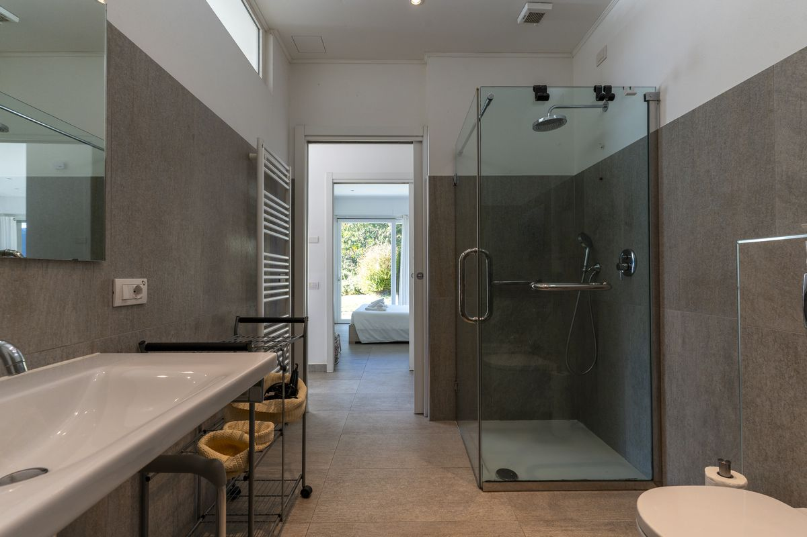
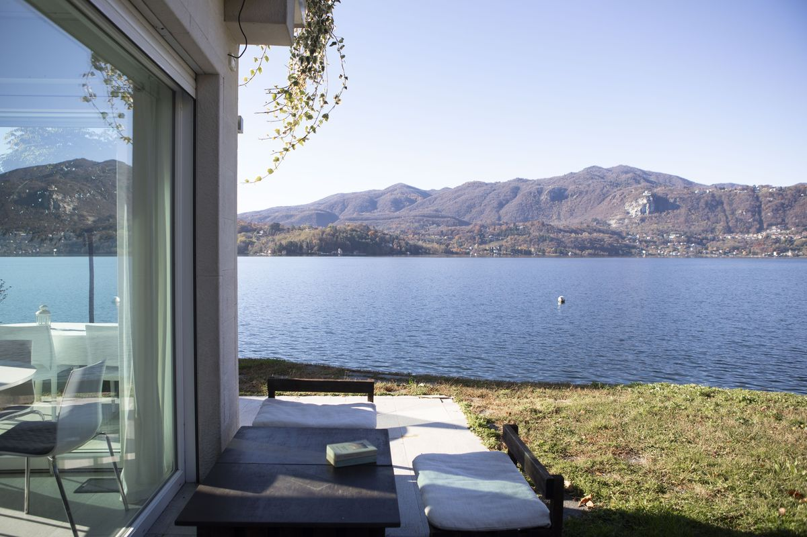
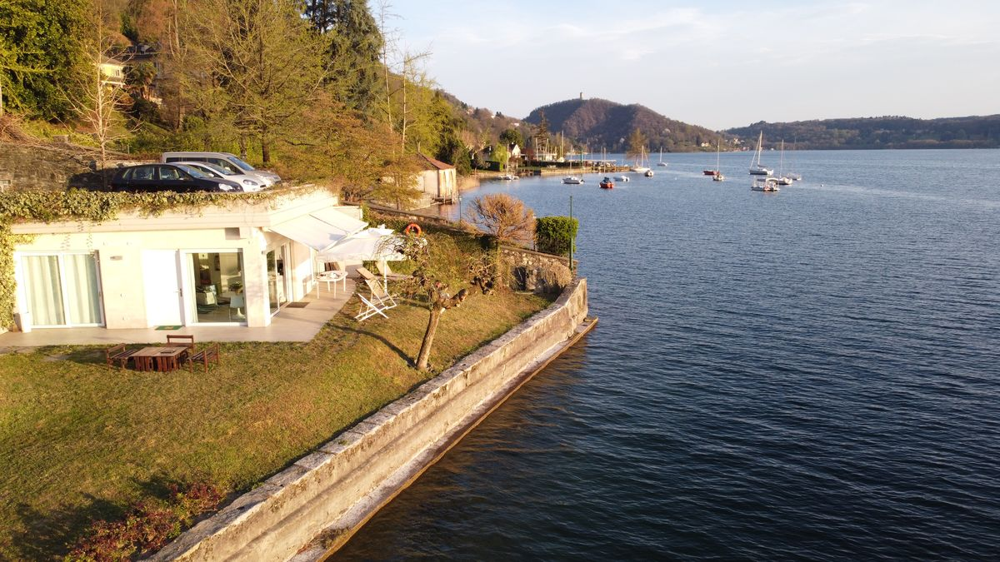

Le rêve de vacances au bord d'un lac italien évoque des après-midi baignés de soleil, l'eau qui vient lécher la pierre ancienne et des soirées à savourer un prosecco face aux panoramas montagneux. Pourtant, les voyageurs ayant des difficultés de mobilité se heurtent souvent à des obstacles importants pour naviguer dans les charmantes ruelles pavées et l'architecture historique de l'Italie. Le lac d'Orta, situé dans la région du Piémont et décrit comme le « secret le mieux gardé » d'Italie, offre une évasion tranquille, moins fréquentée que les lacs de Côme et Majeur. La Villa Volpe, une villa de luxe moderne sur la rive la plus ensoleillée du lac, associe luxe, histoire et accessibilité complète en fauteuil roulant.
Une demande croissante pour le voyage accessible
Le tourisme accessible représente un marché mondial substantiel évalué à plus de 80 milliards USD en 2025, avec une croissance importante prévue. Au sein de l'Union européenne, plus de 70 % des personnes en situation de handicap disposent de la capacité financière et physique de voyager. L'Italie compte environ 4 millions de personnes en situation de handicap et plus de 12 millions de citoyens âgés de 65 ans et plus, représentant des catégories de voyageurs importantes. Malgré une demande évidente, moins d'un quart des hôtels européens répondent aux normes d'accessibilité, la disponibilité des hébergements restant « le principal obstacle à la planification d'un voyage » pour de nombreux voyageurs en situation de handicap.

Le lac d'Orta : défis et charme
Le lac d'Orta enchante les visiteurs avec le village médiéval d'Orta San Giulio, ses ruelles étroites et sinueuses et le superbe front de mer de la Piazza Motta. L'île San Giulio abrite un monastère bénédictin en activité. Cependant, le charme historique présente des obstacles à l'accessibilité. Un contributeur de TripAdvisor a fait remarquer : « La petite ville n'est pas très adaptée aux personnes handicapées. On ne peut pas atteindre la ville ni la plupart des hôtels en véhicule. Il faut se garer plus haut et marcher. » L'office de tourisme du Piémont désigne Orta San Giulio comme « Accessible aux personnes à mobilité réduite », tout en recommandant un accompagnant pour les utilisateurs de fauteuils roulants manuels. Le service de bateau public Navigazione Lago d'Orta exploite des embarcations équipées de plateformes et d'espaces dédiés aux passagers en situation de handicap.

La Villa Volpe : sans barrières par conception
La Villa Volpe représente une conception sans barrières pensée dès l'origine plutôt qu'adaptée après coup. La villa de 65 mètres carrés dispose d'une vaste infrastructure d'accessibilité : un vaste parking privé avec une rampe à 12 % de pente, un agencement entièrement de plain-pied au rez-de-chaussée éliminant escaliers et seuils, des couloirs et des portes larges permettant le passage et le demi-tour en fauteuil roulant, et une salle de bains adaptée dotée d'une douche de plain-pied, de poignées et d'un siège de douche amovible. La villa offre deux spacieuses chambres doubles, des espaces de vie ouverts avec des baies vitrées du sol au plafond encadrant la vue sur l'île San Giulio, une cuisine moderne entièrement équipée et un jardin privé ensoleillé s'étendant jusqu'à un accès privé à la plage. Un système spécialisé de levage de personnes permet un accès sûr au lac sur demande. La propriété a été « testée pour son bon fonctionnement par des personnes en fauteuil roulant ».
L'histoire des origines
L'histoire captivante de la Villa Volpe révèle une conception intentionnelle née d'une nécessité familiale plutôt que d'un calcul commercial. La propriété appartient à la famille Broggi depuis 1956. Lorsque Silvio, le fils du propriétaire, a connu des limitations de mobilité progressives à la suite d'un diagnostic médical, la famille a entrepris un projet de transformation de dix ans. Elle a converti une petite structure de jardin appelée « La Quiete » (Le Calme) en une maison entièrement neuve, indépendante et sans barrières, spécialement conçue pour Silvio et sa famille, achevée en 2013. Le projet a dû composer avec la réglementation italienne complexe de la construction. Le nom « Villa Volpe » (Villa du Renard) rend hommage à la matriarche de la famille, Maura, dont l'intuition avisée et la persévérance ont mené le projet à bon port malgré les obstacles. Cette authentique histoire des origines imprègne la propriété d'une chaleur qui dépasse celle des locations classiques.

Conseils pratiques pour l'exploration
La Villa Volpe constitue une excellente base pour explorer la région. La promenade principale du front de lac d'Orta San Giulio et la Piazza Motta restent relativement plates et pavées, même si les ruelles étroites présentent des difficultés. La marche d'environ 20 minutes de la Villa Volpe au centre-ville comporte un premier tronçon sur la route qui exige de la prudence. Les ferries publics accessibles permettent des excursions vers l'île San Giulio, où le sentier de la « Voie du Silence et de la Méditation » est pavé et majoritairement plat. Le Sacro Monte di Orta, chemin de dévotion inscrit au patrimoine mondial de l'UNESCO, compte 20 chapelles dédiées à saint François d'Assise. Si la route pavée principale monte en pente raide — potentiellement difficile pour les utilisateurs de fauteuils roulants manuels mais gérable avec des fauteuils électriques ou une assistance —, les vues spectaculaires depuis le sommet récompensent l'effort. Une agréable promenade au bord du lac s'étend depuis le Lido di Gozzano, au sud d'Orta, offrant une balade accessible avec de belles vues sur l'eau. Si de nombreux restaurants traditionnels comportent des marches, un nombre croissant d'établissements dotés de terrasses extérieures offrent un accès. L'hôte local Alberto Broggi propose d'excellentes recommandations actualisées pour une restauration accessible.
Une nouvelle norme pour le voyage inclusif
La Villa Volpe représente une frontière de transformation dans le voyage, démontrant qu'une conception réfléchie et une hospitalité authentique créent de véritables espaces d'inclusion. Elle contredit les discours suggérant que les destinations historiques restent inaccessibles aux voyageurs en situation de handicap, apportant la preuve que luxe et accessibilité peuvent coexister. La propriété, née d'un amour familial plutôt que d'un plan d'affaires, incarne une hospitalité authentique dans chaque détail. Pour les voyageurs exigeants en quête d'une base luxueuse et sans souci pour explorer l'un des lacs les plus beaux et les plus romantiques d'Italie, la Villa Volpe ouvre la porte à une expérience italienne inoubliable, véritablement accueillante pour tous les visiteurs.